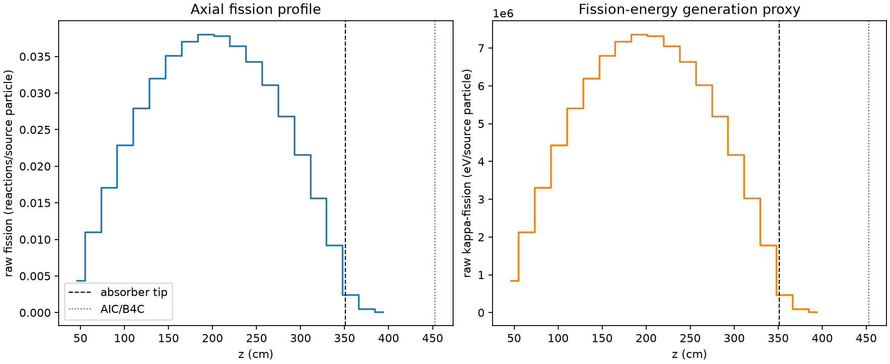
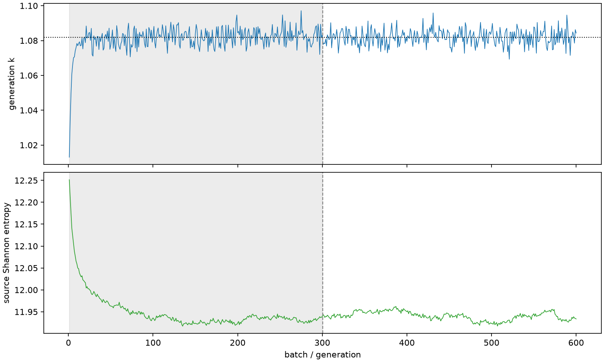

| field | value |
|---|---|
| experiment | V2-STAGE_256_OGRENCI_03-0020 |
| k | 1.081845671458575 |
| MC standard error | 0.00017640137350813465 |
| seconds | 1007.6777227150014 |
| acceptance | not_assessed |
| convergence | review_required |
Completed is output integrity only; physical and statistical review required. Zero tallies do not prove zero production or zero uncertainty.
| diagnostic | value |
|---|---|
| geometric fuel voxels | 5280 |
| zero fission tally voxels | 0 |
| low signal fuel voxels | 1 |
| low signal fission share | 6.799462190675496e-07 |
| low signal kappa share | 6.803318614015699e-07 |
| important fission share | 0.9500002312729381 |
| previous filter included | 5279 |
| duration estimate s | 1562.5173488400023 |
| actual minus estimate s | -554.8396261250009 |
| fission relative MC error | statistics |
|---|---|
| all_geometric_fuel | {"voxels": 5280, "positive_mean_voxels": 5280, "zero_mean_voxels": 0, "undefined_relative_error_voxels": 0, "median": 0.009555321650713251, "p95": 0.09044591216916528, "maximum": 0.20372842425298884} |
| low_signal | {"voxels": 1, "positive_mean_voxels": 1, "zero_mean_voxels": 0, "undefined_relative_error_voxels": 0, "median": 0.20372842425298884, "p95": 0.20372842425298884, "maximum": 0.20372842425298884} |
| important_95pct | {"voxels": 3826, "positive_mean_voxels": 3826, "zero_mean_voxels": 0, "undefined_relative_error_voxels": 0, "median": 0.008576437986055965, "p95": 0.012730399952334843, "maximum": 0.015452945642131543} |
| outside_previous_filter | {"voxels": 1, "positive_mean_voxels": 1, "zero_mean_voxels": 0, "undefined_relative_error_voxels": 0, "median": 0.20372842425298884, "p95": 0.20372842425298884, "maximum": 0.20372842425298884} |
| kappa_fission relative MC error | statistics |
|---|---|
| all_geometric_fuel | {"voxels": 5280, "positive_mean_voxels": 5280, "zero_mean_voxels": 0, "undefined_relative_error_voxels": 0, "median": 0.009544017566168671, "p95": 0.09028234484942041, "maximum": 0.2033291856287037} |
| low_signal | {"voxels": 1, "positive_mean_voxels": 1, "zero_mean_voxels": 0, "undefined_relative_error_voxels": 0, "median": 0.2033291856287037, "p95": 0.2033291856287037, "maximum": 0.2033291856287037} |
| important_95pct | {"voxels": 3826, "positive_mean_voxels": 3826, "zero_mean_voxels": 0, "undefined_relative_error_voxels": 0, "median": 0.008564988755008777, "p95": 0.01271467191420143, "maximum": 0.015433920181818382} |
| outside_previous_filter | {"voxels": 1, "positive_mean_voxels": 1, "zero_mean_voxels": 0, "undefined_relative_error_voxels": 0, "median": 0.2033291856287037, "p95": 0.2033291856287037, "maximum": 0.2033291856287037} |
| axial bin | fission share | kappa-fission share |
|---|---|---|
| 1 | 0.009858059300031594 | 0.00985853567766534 |
| 2 | 0.0249745882483728 | 0.024974544834163045 |
| 3 | 0.038766919988385426 | 0.03876685448250451 |
| 4 | 0.05180309521790092 | 0.051802969206819725 |
| 5 | 0.06322170635531689 | 0.06322147532684742 |
| 6 | 0.07258525385726397 | 0.07258544757696805 |
| 7 | 0.07961407844885655 | 0.07961372766691835 |
| 8 | 0.08389296258563843 | 0.08389277637490877 |
| 9 | 0.0860780060728323 | 0.08607755930946519 |
| 10 | 0.08561747057515395 | 0.08561719030232451 |
| 11 | 0.08259166939228295 | 0.08259164357957526 |
| 12 | 0.07765947565239585 | 0.07765923240370383 |
| 13 | 0.07046959947148479 | 0.07046927664333588 |
| 14 | 0.0607726511905232 | 0.06077240163618008 |
| 15 | 0.048885092450822114 | 0.048884917709595764 |
| 16 | 0.035445266790851256 | 0.03544516858649602 |
| 17 | 0.02088659011244138 | 0.02088658276360892 |
| 18 | 0.0055793194729563175 | 0.005580867978344569 |
| 19 | 0.0010880086029605187 | 0.0010885293675422347 |
| 20 | 0.00021018621352894055 | 0.0002102985730323963 |
Histories include the inactive-to-active transition at batch 300. kappa-fission approximates fission energy production, not total heat deposition.

